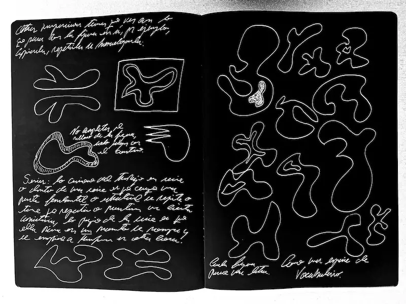
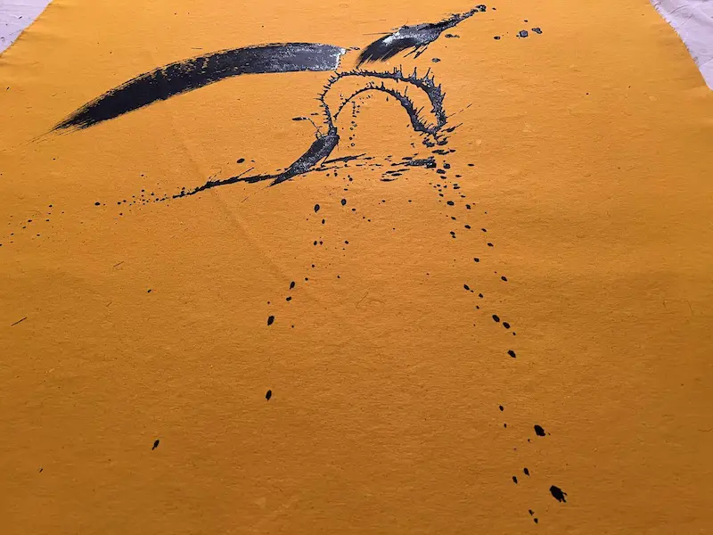
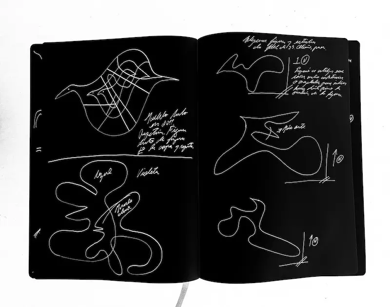
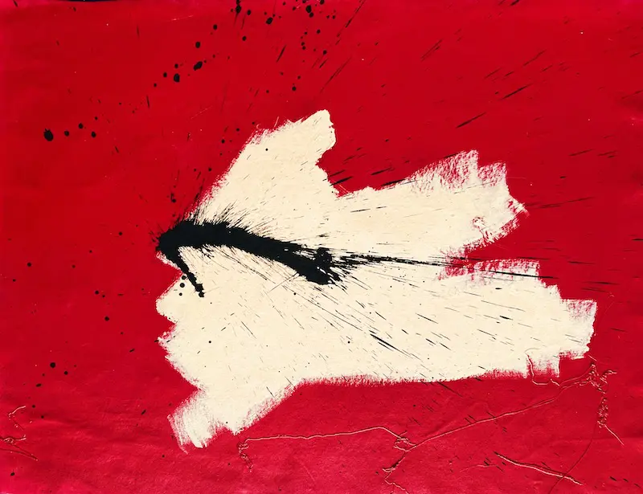

Pictorial Poetics
1.
Figures are forms of life. I draw details and extensions that attract me by their composition. Angles, spirals, arcs. Visual instants that may seem like legs in the air or in the water, the curve of the transit of the neck towards the shoulders, the elongated shape of the thresher shark's tail which, in the middle, implies a necessary balance for the aerodynamics of the animal. All of that is true and possible, but when I do it, I am not drawing or painting an individual person or an animal swimming, I am keeping something that resonates with me, something that resonates so much that my body wants to repeat it and, in fact, can. It's a necessity: the fin I saw at some point, the way two limbs were coming together. Suddenly, all of that concurrs. I keep only one part and that is the one I use and that ends up demonstrating its similarity to so many others. The triangle that yields or varies with its fast vertex looks like a disc, a boomerang or a feather. The album of nature is immense, but it is not infinite. From the comma of the boomerang to the beak of a toucan there is only a leap. Again, they are all descriptive elements. A wing and a leaf look alike. In my pulse, the line I trace with the brush may yield an accent that may soon turn it into a petal or a propeller.
 Studies and notes for the Chelsea series
Chelsea series #12, acrylic on canvas, 33 x 36 inches, 2022
2.
Right now, at the end of 2023, the intention or interaction I see most is between figures and colors. I feel that beyond being achieved, the works made in the last two years come by intuition to a palette that I then discover and study, and then continue to work on. I say "then" because I always feel that the real work "is" or will be. Each painting is the seed of another, like a reflection of the previous. Perhaps the work has been that way because I myself am like that, something or someone who is always about to start the next thing. In that movement or that perception of movement is that I have done what I have done and it is absurd, because it is as if the work were the way to "the work" that would ultimately turn out to be my whole existence during the previous process. That potentiality is not because of talent but rather due to my willingness. I am willing to let the things that I sense may happen, happen. And that is what I focus on. To try to understand what it is that I will do. The same with painting.
3.
My relationship with war at the moment is my relationship with space. My first reaction to these images is to ask myself how far I am from it. With that I don't intend to disengage, but to understand where the matter is and where I am in relation to it, to relate to it. Since I am tall, or at least not short, it is like when I go through a door and I calculate the upper frame of the door. It is a quick operation, but a crucial one. From it my body will calculate how much to lean, how much to arch my neck or back. To do otherwise would be blindness. In this particular current case, how big is the ocean that separates us. How big is Israel or Gaza compared to a state (or province, as they also call them) of my country, the country I know best and through which I can measure things better. Such is the fabric of space that the word "occupation" is part of the conflict and of the elementary physical notion. Space is inhabited, occupied. The conflict in the Middle East is precisely a historical conflict for a space, fueled by the fact that there are people, peoples or ideologies reluctant to be "close," not to say "together".
War does not have to come down or be in the work as a pictorial discourse or to the exclusion of other realities, such as my immediate reality, where there is no war, but there is no peace either. The work itself is a conflict. All the time within the work there are problems that forge unique solutions, which can hardly be repeated, so a sense of anguish is constantly expected, which is eventually relieved when the problem disappears and gives way to a success, to something we were looking for, but did not know how to look for.
 Canvas detail from the studio
4.
The abstract is gigantic or tiny, it has no measure because it is a proposal to intellection. An idea cannot be measured. Kandinsky said in some of his notes that the color yellow, if one thinks about it, is yellow without more, it does not measure a centimeter or a thousand kilometers. It can be a drop of yellow, a spill of yellow or a yellow sky.
5.
Returning to the issue of war and the work, or my work at this moment, my spiritual situation in this regard (which I do think about and do care about), is that I am in a world at war and there I live, love and work, and put something together. I include this same paragraph or my need to write about it. What does it mean then for me to be in that world, how do I react to it, how do I feel and what can I do? Whether what I can do in the face of something of such magnitude is just to give my opinion, or to have an opinion (which implies sharing it) or just to form it (which does not imply sharing it).
What transcends at this moment in my works is the interaction. The violence or harmony with which the figures, composed by chromatic values, dialogue, penetrate each other, repel each other. Just as it happens in other fields outside the arts. It bores me to use the color of flags, of all of them, those of countries and cultures, as well as those of ideas. That red is used for blood and black for pain or mourning. Anyone knows that to bleed or to see someone bleed is more, much more than that. The same with pain or suffering. To give in, would be to repeat the nonsense that reduces deep, unresolved, impulsive, inexplicable even, human behaviors and behaviors to the descriptive label in milliliters of the bottle of a (supposed) medicine.
At this moment I am contemporary with bombings, migrations, tortures and abandonment. I am close to the conflict and all of it, at least the images of it, which enter my house with or without press. In fact, I am contemporary with an era in which news, the witnessing of facts and their visual representation, has little to do with the press or what used to be called the press as a guarantee of factuality. So that lack of certainty makes me a contemporary of the notion of not knowing (well) with which things I am. I think it used to be easier to know, because it was also easier to know less. The Internet and social networks have everything to do with this reflection.
Now, I am not only a contemporary of the conflict in Israel, but the one in Ukraine, which has been displaced from the news the last few days. Coming from Venezuela and living in the United States, I believe that now the conflict, my conflict, is total. Some are closer than others and in different ways, but I come from such a country and I arrived and live in a country that has to do with all the conflicts in the world, in some cases with direct responsibility. I am in that place, and from there I meditate on all this.
 Studies of figures and interactions
Studies of figures and interactions
Chelsea series #74, acrylic on canvas, 29 x 29 inches, 2023
6.
Interactions are abstract. What happens between two colors, or between one and a tone, does not need the figure to occur. Nor major forms.
I don't come to say that such and such purple with such and such yellow look good, or look good together and that I, for discovering or sharing it, am a genius. No. I want precisely the opposite to happen, I want to share an interaction in which I do not know precisely what is going on, what is happening there, but which certainly, being only color or spatial dialogue (with the background, the frame, the edges of the figures) manages to question me, to affect me, to please me. The wonderful thing about working with this type of (abstract?) phenomena is that it occurs independently of me or my intervention. Nature offers them in real time in some other place that I don't know, in front of someone who also escapes me.
If it were another type of work, the thing would necessarily need me, because the drawing that someone does cannot be done by anyone else, or not exactly. The phenomenon I exhibit happens without me. It has before and it will later. I find that fascinating. In these works it is easier to disappear as an individual and to be diluted in movements, silences, rhythms, sensations. Everything that works in our minds most of the time (sometimes, when we let it be) and we perceive without ideas, desists from the material unity, formed from the idea and of course, from the word. What moves us in front of the sunset does not react when we say "sunset" or much less "it moves me."
What is the recent work about then? About doubt, about astonishment. Of what we are before it, not because of what it is, but because of what it reflects. It's not that I say "this is deep, look here", but that what is there, really just reflects things that are happening: spatial relationships, contrasts, harmonies. Blood moving through arteries, proteins being absorbed, satellites traveling the earth, dewdrops above a stem, suspended.
Synthesis of the Chelsea work
 From the studio, New York City, summer 202
From the studio, New York City, summer 202
7.
Color is fantastic because it has no language, but is a language in itself. What a color or a perfectly executed geometric figure produces in us will always be difficult to describe or will have so many valid descriptions that will make the description itself or its necessity sterile at all. It is not that a shade of purple makes me think of childhood and that solves everything. That's atrocious. And idiotic. I loathe that shade and I loathe that semantic usage.
 Conceptions and decompositions of the form
8.
I am constantly doubting and on the other hand I have some very firm certainties, i.e., I know I will do something about those doubts. Even if it's just exposing them, that's all. I am comfortable with the idea that a great many things will never have an explanation, but that will not stop me from contemplating them and addressing them. In fact, the things I can see without understanding are my favorite. I go to a concert and see a violin and am still amazed that, out of there, out of that, comes what you hear. In real time I see the orchestras, their movements, their bodies, the care, the strength and I feel that the music is (coming) from somewhere else. I can explain the whole process and I know that the music is indeed being played, but I still don't fully understand it. The same with the needle when it touches the surface of the acetate disc. I see the acetate, the needle and what I hear or is produced, as four isolated things, united by something that is the most important thing (that brings them together and justifies and makes them useful, precisely) and that cannot be apprehended.
 Chelsea series #17, acrylic on canvas, 36 x 47 inches, 2022
9.
So yes, I think my works have to do with the most essential existential approach or character, the one that refers to the forms of life, including ours, and understanding that life reveals itself in forms that are not always, or are totally unpublished. The forms resemble each other. What happens between them is what I am proposing. These works can be molecules seen in a telescope, a forest immersed in the water of a fishbowl, a neighboring galaxy, the iridescent ripples of oil in a street puddle. The work is all that, but it is also the mirror of a doubt. What we are in front of those forms, the space, and why a painting makes us feel and think that the thing we see represents something we are, that somehow what we see, what we experience, already happens inside us. The matter that I reflect is the matter that composes me. The matter that I pursue is the matter that I lack. The work I conclude is a question I have just asked.
Space and canvases, interactions of light
Juan Luis Landaeta
New York City, autumn 2023.